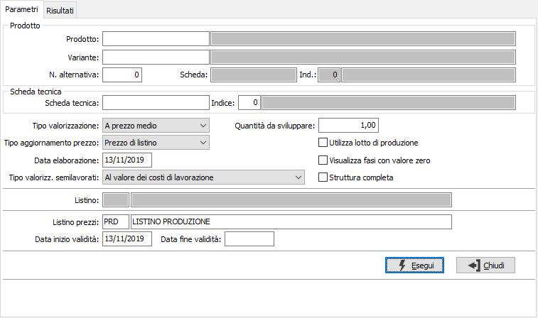
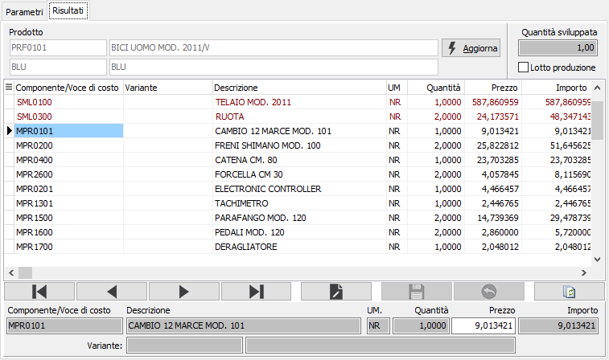

Valorizzazione manuale scheda tecnica
La funzione consente di effettuare la valorizzazione della scheda tecnica di tipo interattivo. Per ogni scheda che viene analizzata vengono determinate le seguenti informazioni:
Costo dei materiali
Costo delle lavorazioni interne (distinte fra costo risorse e costo operatori)
Costo delle lavorazioni esterne
Ricarichi gruppo costi
Il costo complessivo previsto (determinato dalla somma degli elementi descritti) può essere memorizzato su un apposito listino (oppure sul costo standard del prodotto) in modo da poterlo analizzare nella fase di consuntivazione economica.
E' possibile valorizzare anche le schede tecniche non ancora associate a prodotti; la valorizzazione non ha ricarichi (che vengono definiti in fase di associazione prodotto) ma riporta sia i materiali (a tutti i livelli) che i costi di lavorazione della scheda stessa.
Nel caso di valorizzazione della sola scheda tecnica saranno disabilitati tutti i tipi di aggiornamento.
La finestra si articola su due pagine, una per l'inserimento dei parametri e l'altra per la visualizzazione del risultato, l'eventuale modifica e la stampa.
Parametri

Nei parametri di selezione è necessario specificare il prodotto e la variante se gestita oppure il codice della scheda tecnica se ancora non associata ad alcun prodotto, il tipo di valorizzazione dei componenti (è possibile utilizzare quello definito sulla scheda tecnica selezionando la voce specifica), la quantità di composto da utilizzare per il calcolo della valorizzazione è possibile spuntando la casella relativa preimpostare il lotto di produzione, il tipo di prezzo da aggiornare e la data di elaborazione; il campo Tipo valorizzazione semilavorati definisce il metodo di calcolo del prezzo per i semilavorati e può avere i seguenti valori:
Standard: utilizza il tipo di calcolo definito sulla scheda tecnica
Al valore delle materie prime: utilizza come prezzo il valore derivante dalla somma dei costi dei componenti.
Al valore dei costi di lavorazione: utilizza come prezzo il valore dalla somma dei costi dei componenti aumentato dei costi di lavorazione.
Al valore dei costi di produzione: utilizza come prezzo il valore dalla somma dei costi dei componenti aumentato dei costi di lavorazione e dei costi di produzione.
Se si seleziona un criterio diverso da Standard è possibile spuntare la casella Struttura completa per aggiungere la visualizzazione e la stampa dei componenti dei semilavorati valorizzati; se previsto l'aggiornamento di un listino si deve inserire anche il codice e la data di inizio validità. È possibile visualizzare le fasi con valore zero spuntando l'apposita casella.
Risultati
Il risultato dell'elaborazione viene visualizzato in questa pagina, da dove è possibile intervenire direttamente sui dati elaborati.

In questa sezione vengono visualizzati tutti gli elementi che concorrono a valorizzare il prodotto; i componenti, le lavorazioni ed i costi di produzione eventualmente associati. Per ogni riga vengono visualizzati il codice del componente, la descrizione, del componente, della lavorazione o della voce di costo, il prezzo unitario, la quantità e l'importo. Non è possibile inserire o cancellare i dati risultato dell'elaborazione, ma è tuttavia possibile modificare il prezzo dei singoli componenti.
Nel caso siano apportate delle variazioni i dati sottostanti saranno riallineati in tempo reale automaticamente.
Nel caso si sia optato per l'aggiornamento del prezzo del prodotto sarà abilitato il pulsante Aggiorna, che se premuto effettuerà l'aggiornamento con il prezzo di vendita derivante dall'elaborazione corrente e dalle eventuali variazioni apportate e/o dei criteri di valorizzazione adottati. Sulla Toolbar sono disponibili i tasti di Stampa ed Anteprima per effettuare la stampa del report.